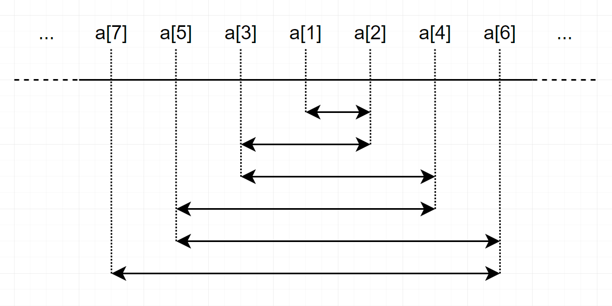

CF 1339B Sorted Adjacent Differences
B. Sorted Adjacent Differences
You have array of n numbers $a_{1}, a_{2}, \ldots, a_{n}$.
Rearrange these numbers to satisfy $|a_{1} - a_{2}| \le |a_{2} - a_{3}| \le \ldots \le |a_{n-1} - a_{n}|$, where |x| denotes absolute value of xx. It’s always possible to find such rearrangement.
Note that all numbers in a are not necessarily different. In other words, some numbers of a may be same.
You have to answer independent t test cases.
题意：对数组排序使得前后两项之差的绝对值递增
Sort the list, and make an oscillation centered on middle element like picture below.

In this way, you will always achieve to make $|a_{i} - a_{i+1}| \le |a_{i+1} - a_{i+2}|$ for all ii. Time complexity is O(nlogn).
1 | int t,n,a[MAX],b[MAX],l,r,cnt; |